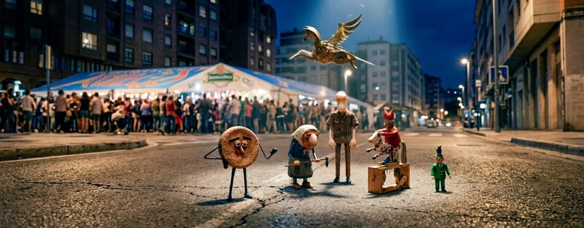
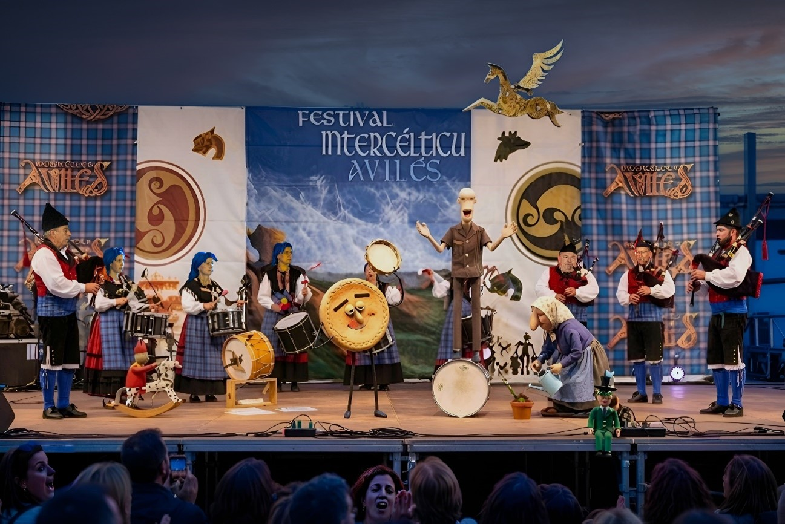

Sala III
La luna llena, el pestillo de la vitrina y, a lo lejos, el eco de una banda de gaitas que no sabe lo que se le viene encima.
La luna llena iluminaba el tejado del Centro de Mayores. Dentro, la exposición de autómatas había quedado en silencio. Fuera, a lo lejos, el eco de los gaiteros de la Banda Esbardu marcaba el ritmo del Festival Intercéltico.
Fue el "Dios y el cuito poden muito" (la Abuela) quien dio la señal. Con un giro preciso de su azada de madera, desactivó el pestillo de la vitrina principal. Un clic, y la libertad estaba servida.
El Trilero, con su camisa de bolera, salió el primero, ajustándose las articulaciones.
—¡Vamos, equipo! —siseó—. Es la hora de la verdad. El plan "Distracción Melódica" ha funcionado; el guardia está comiendo un pincho en la plaza y no volverá en horas.
El Bufón (el Fool), encaramado en su caballo moteado, comenzó a girar su manivela como un poseso, aunque el caballo, por suerte, estaba bloqueado en la base.
—¡Sidra! ¡Música! ¡A LA CALLE! ¡JA-JA-JA-JA!
Pegasus, el caballo alado de latón, desplegó sus intrincadas alas grabadas y se elevó elegantemente por encima de las cabezas de sus compañeros.
—Seguidme, criaturas de poca altura —declaró con su acento británico—. Os guiaré por los tejados. La navegación aérea es mi especialidad.
El Esquilador y la Oveja seguían enzarzados en su peculiar danza, con las tijeras haciendo clic-clac peligrosamente cerca de la nariz de Berta.
—¡Suéltame, idiota! —gruñó la oveja—. ¡O te muerdo el codo de madera!
El pequeño de verde, el más asustadizo, se aferró a la pierna del Trilero.
—¿Crees que les gustaremos a los gaiteros de verdad? ¡Son muy ruidosos!
La Galleta, con su taza de café a medio "beber", los miró con imperturbable calma.
—Relajaos. La música es sidra para el alma mecánica. Vamos allá.
La escapada por los pasillos del Centro fue un caos orquestado. El Fool no paraba de reír, y el Esquilador intentaba esquivar a la oveja mientras bajaban por una tubería. Pegasus, desde el aire, dirigía la operación como un general.

Cruzaron la calle de la Francisco Orejas, sus pies de madera resonando sobre el asfalto. El sonido de la gaita y el tambor se hizo ensordecedor. Al doblar la esquina, la explanada del escenario principal del Intercéltico se abrió ante ellos.
La Banda Esbardu estaba en pleno apogeo. Los gaiteros tocaban con fuerza, los tambores redoblaban, y la energía celta llenaba el aire de la noche. La multitud, ajena a la fuga, aplaudía y bailaba.
El Trilero, con su astucia habitual, vio la oportunidad.
—¡Es nuestra entrada, chicos!
Sin dudarlo un momento, el grupo de seis autómatas corrió hacia la parte trasera del escenario. Pegasus, con un último aleteo, se posó en lo alto del mástil de la bandera principal, justo al lado del gran cartel que rezaba "FESTIVAL INTERCÉLTICO AVILÉS".
El resto del grupo subió por las escaleras de servicio y se mezcló con los músicos.
El gaitero principal, un hombre corpulento y barbudo de la Banda Esbardu, se giró y casi se atraganta con su instrumento al ver al Trilero a su lado, marcando el ritmo con sus manos de madera sobre una caja de sidra vacía que encontró en el suelo.
El Bufón, al ver el escenario, se colocó justo en el centro, frente a la gran batería principal de la banda, y comenzó a girar su manivela tan rápido que el "¡JA-JA-JA-JA!" de su voz resonó por todo el recinto, mezclándose perfectamente con el sonido de las gaitas.
La Abuela, impertérrita, se plantó al lado de una de las percusionistas y, con un movimiento de azada, fingió plantar una flor en el suelo de madera del escenario, mirando al público con una sonrisa mecánica.
El pequeño de verde, superado por la emoción, se puso a bailar una muiñeira a los pies de otro gaitero, con un entusiasmo que provocó una ovación espontánea.
El Esquilador, con la oveja aún pegada a sus tijeras clic-clac, tropezó con el cable del micrófono central, pero el impacto fue tan rítmico que el técnico de sonido lo confundió con un efecto especial y lo amplificó.
La Galleta, por su parte, se sentó en una banqueta vacía cerca del borde del escenario, levantó su taza de café hacia el público y brindó por la multitud, con su expresión más feliz.
La Banda Esbardu, lejos de asustarse, se contagió de la energía anárquica de sus nuevos miembros mecánicos. Los gaiteros subieron el volumen, los tambores golpearon con más fuerza.
Fue el momento más caótico y glorioso de la historia del Festival Intercéltico.
Bajo la luz de los focos, con Pegasus vigilando desde lo alto, los músicos humanos y los autómatas de madera se fundieron en un único acto de pura magia celta. La evasión había terminado, pero el espectáculo apenas comenzaba.
Y así, en el escenario de Avilés, la colección de Daniel González y la Banda de Gaitas Esbardu se convirtieron en una sola leyenda.
